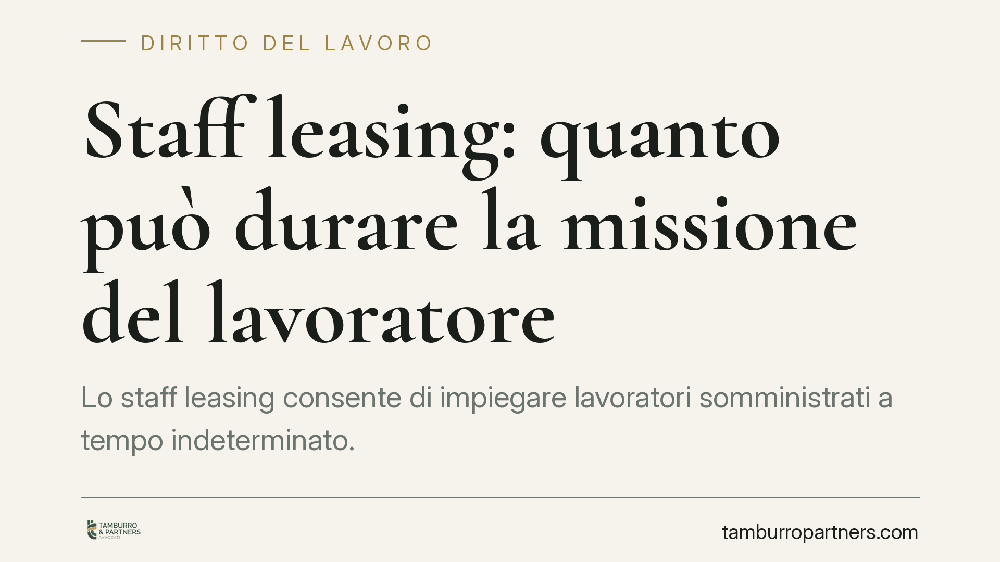

Staff leasing: quanto può durare la missione del lavoratore
Lo staff leasing consente di impiegare lavoratori somministrati a tempo indeterminato. Ma la durata della singola missione non è un tema neutro: una permanenza troppo lunga presso l'utilizzatore può segnalare un uso improprio dello strumento. La giurisprudenza europea e nazionale ha fissato paletti che espongono l'impresa a rischi concreti di riqualificazione del rapporto.

Il contesto
Lo staff leasing, o somministrazione a tempo indeterminato, è disciplinato dall'art. 31 del D.Lgs. 81/2015. In questo modello l'Agenzia per il Lavoro (APL) assume il lavoratore con contratto a tempo indeterminato e lo invia in missione presso una o più aziende utilizzatrici.
Una precisazione utile: nello staff leasing è a tempo indeterminato il contratto tra APL e lavoratore, non necessariamente la singola missione. La missione è il periodo in cui il dipendente presta servizio presso una determinata impresa. Ed è proprio sulla durata di questa missione che si concentrano i dubbi operativi.
Inquadramento normativo
Il D.Lgs. 81/2015 pone limiti quantitativi allo staff leasing: i lavoratori somministrati a tempo indeterminato non possono superare il 20% del numero dei dipendenti a tempo indeterminato dell'utilizzatore, salvo diversa previsione dei contratti collettivi (art. 31, comma 1).
La norma nazionale, però, non fissa un tetto espresso alla durata della singola missione nello staff leasing. Il vuoto è stato colmato dalla giurisprudenza. La Corte di Giustizia dell'Unione Europea, interpretando la Direttiva 2008/104/CE sul lavoro tramite agenzia, ha chiarito che la somministrazione deve mantenere carattere "temporaneo". Missioni successive che, di fatto, coprono in modo stabile e duraturo una posizione lavorativa contrastano con la finalità della direttiva.
Su questa scia si sono mossi la Corte di Cassazione e i giudici di merito, tra cui il Tribunale di Milano. Il principio è chiaro: quando la missione perde il connotato della temporaneità e diventa uno strumento per soddisfare esigenze stabili e permanenti dell'utilizzatore, si apre lo spazio per la riqualificazione del rapporto in lavoro subordinato a tempo indeterminato alle dirette dipendenze dell'azienda utilizzatrice.
Cosa significa in concreto
Non esiste una soglia numerica automatica oltre la quale la missione diventa illegittima. La valutazione è casistica e guarda alla sostanza: la funzione svolta dal lavoratore è realmente temporanea o copre stabilmente un fabbisogno ordinario dell'impresa?
Gli indici che i giudici valutano sono, ad esempio, la durata complessiva della permanenza, la reiterazione delle missioni sulla stessa mansione, l'assenza di ragioni oggettive collegate a picchi o esigenze straordinarie, il ricorso allo strumento come alternativa strutturale all'assunzione diretta.
Quando l'uso dello staff leasing elude di fatto la disciplina del rapporto a tempo indeterminato, il rischio non è solo teorico. La riqualificazione comporta la costituzione del rapporto in capo all'utilizzatore, con possibili differenze retributive, contributive e, nei casi più critici, profili sanzionatori.
Le conseguenze per l'azienda utilizzatrice
È l'impresa che beneficia della prestazione a sopportare l'esposizione maggiore. Una missione dichiarata illegittima può tradursi nell'obbligo di riconoscere il rapporto come subordinato a tempo indeterminato, con effetti retroattivi sui trattamenti dovuti.
A ciò si aggiungono i costi indiretti: contenzioso, ricostruzione della posizione contributiva, gestione del personale. Per questo la durata delle missioni va monitorata come una variabile di rischio, non come un dettaglio amministrativo delegato all'APL.
Cosa fare in concreto
- Mappate le missioni in corso, indicando durata effettiva, mansione e ragione dell'utilizzo dello staff leasing per ciascun lavoratore.
- Verificate il rispetto del limite percentuale del 20% previsto dall'art. 31 D.Lgs. 81/2015, controllando anche le deroghe del contratto collettivo applicabile.
- Distinguete le posizioni che coprono esigenze realmente temporanee da quelle che soddisfano un fabbisogno stabile: per queste ultime valutate l'assunzione diretta.
- Conservate documentazione che giustifichi il ricorso alla somministrazione, così da poter dimostrare, in caso di contestazione, le ragioni oggettive dell'utilizzo.
- Coordinatevi con l'APL sulla gestione delle missioni prolungate, ma non delegate integralmente la valutazione del rischio: la responsabilità della riqualificazione ricade sull'utilizzatore.
In sintesi
Lo staff leasing è uno strumento legittimo e flessibile, ma non illimitato nel tempo. La chiave interpretativa è la temporaneità: finché la missione risponde a esigenze non stabili, lo strumento regge. Quando diventa un sostituto permanente dell'assunzione diretta, il rischio di riqualificazione è concreto e va gestito prima che si trasformi in contenzioso.
Contributo informativo a cura di Tamburro & Partners - Avv. Giuseppe Tamburro. Non costituisce parere legale.
Ogni storia di lavoro ha i suoi tempi.
Se gestisci HR e vuoi un confronto su contenzioso, ispezioni o licenziamenti, scrivi allo studio. Ti rispondiamo entro un giorno lavorativo.